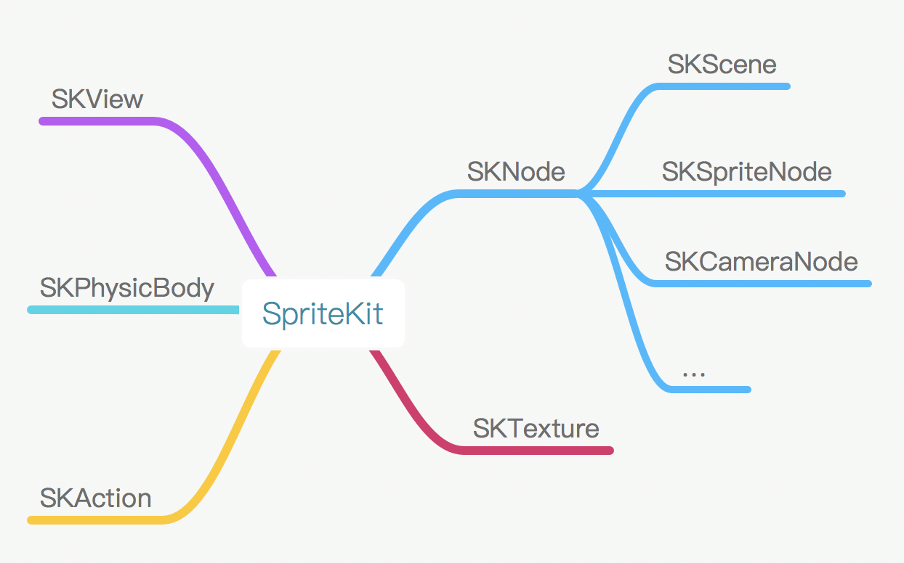
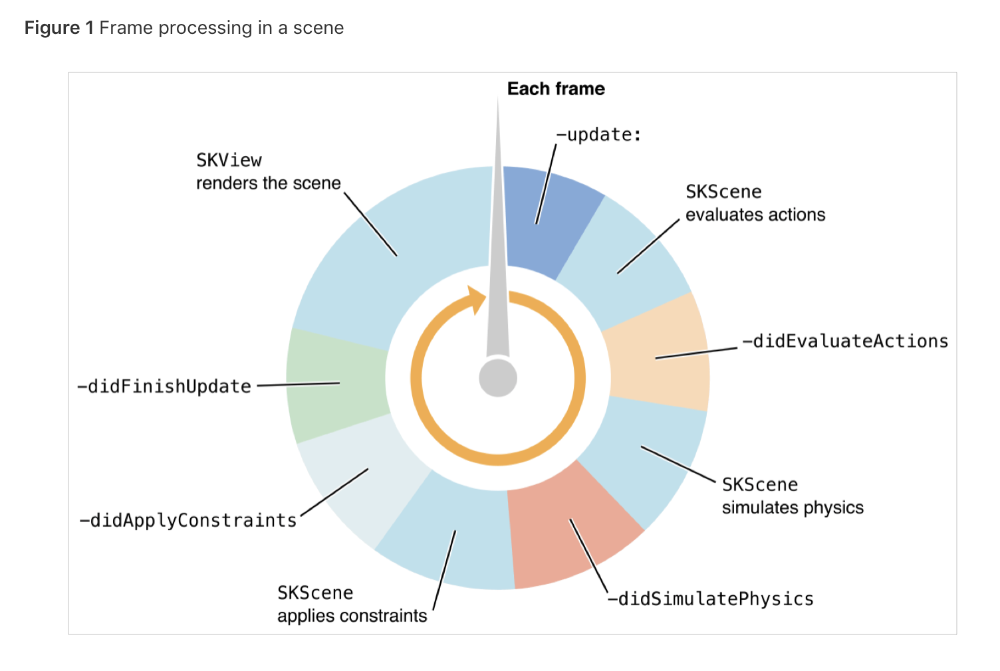
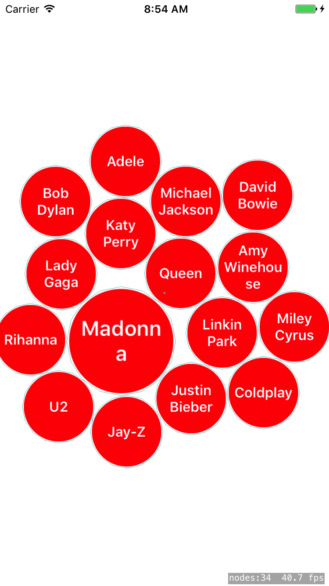
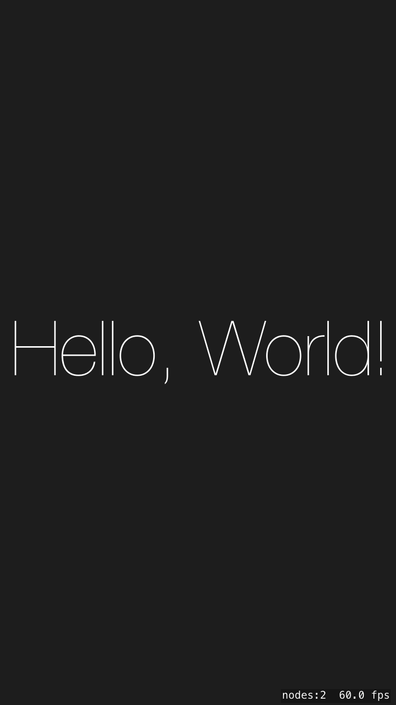

引语
作为一个 iOS 开发，你应该知道一个 app 是怎样从无到有，但对于游戏，却不一定。所以，本文可以你了解游戏开发方面的知识。
为什么是 SpriteKit？
首先，我们需要了解目前手机游戏开发的现状。目前，手机游戏引擎用的最多的应该是 Cocos2d-x 和 Unity，它们都是垮平台的引擎，但这两者对于初学者来说，需要额外学习的东西太多。
SpriteKit 是由 Apple 在 WWDC 2013 发布 2D 游戏引擎，目前可用于 iOS, macOS tvOS 和 watchOS。它有着良好的设计、简单易用、API 和 Cocos2D 非常像。
对于已经熟悉 iOS 开发的人来说，其用法和 UIKit 差不多，而且，他并非只能用来开发游戏。本文后面就会用 SpriteKit 实现类似 iTunes Music 的风格选择交互。
SpriteKit Framework 介绍
首先，我们来看 SpriteKit 主要类结构。

SKView用来管理和渲染SKScene， 继承自UIView。你甚至可以将SKView与UIKit里的其他View结合使用，比如在其之上加一个UIButton。SKNode是基础类，和UIKit类似，SpriteKit有node trees的概念，实际中一般和其子类打交道。SKNode定义了一些基础属性和方法，如position,frame,alpha,physicBody,addChild(),runAction()等。SKAction用来实现位移、缩放等效果，调用SKNode.runAction()将Action添加到Node，可以自由组合Action实现复杂效果。SKPhysicBody定义了一个 Node 的物理属性，设置 node.physicBody 后 node 就可以进行物理计算、碰撞检测。SKPhysicBody 包含了质量、速度、弹性、摩擦力等属性。SKScene是root node，定义了 SKView 显示的具体内容， physicsWorld 属性可设置重力等全局属性，通过 SKPhysicsContactDelegate 获得碰撞通知。就游戏来说，其内容是动态变化的，所以 SKScene 有一个 rendering loop (见下图)

每一帧都会执行这个 loop，loop 执行完之后被改变的内容才会重新绘制。子类化 SKScene 时可以重写 update(_:) 和 didXXX 方法获得回调。
结合 Magnetic 进行代码讲解
上面介绍了 SpriteKit 的一些基本概念，下面我们通过一个示例来介绍如何在普通 app 中结合 SpriteKit 实现一些优雅的交互。此示例受 Github 上的 Magnetic 项目启发，用 SpriteKit 实现 iTunes Music 的「个人喜好定制」功能，源码见 https://github.com/iblacksun/Artists， 最后效果如下：

开始实现
第一步，使用 Xcode 新建一个 Game 类型的项目，Game Technology 选 SpriteKit。简单起见，修改 Deployment Info，使其只支持 iPhone 和 Portrait 方向。Build & Run 之后你会看到我们熟悉的 Hello World。

Hello World 项目中很多模板代码在我们项目中并不需要，删除 GameScene.sks, Actions.sks, GameScene.swift 几个文件；修改 Main.storyboard 将 SKView 的 backgroudColor 修改成白色；修改 GameViewController 替换成如下：
此时如果运行项目的话应该是一个灰色空白界面，底部显示了 nodes 数量和 fps。
构建 Node
现在该主角们登场了，新建 ArtistsScene.swift ArtistNode.swift，分别继承 SKScene 和 SKShapeNode。修改 GameViewController 的 viewDidLoad 方法，在末尾加入代码：
let scene = ArtistsScene(size: skView.bounds.size)
skView.presentScene(scene)
调用 presentScene(_:) 方法呈现 Scene，此时 ArtistsScene 就是 root node，因 SKScene 的默认背景色是黑色，所以现在运行项目的话会看到一个黑色空白界面。
接下来开始实现功能，重写 ArtistsScene 的 didMove(to:) 的方法，此方法在 Scene 被 present 时会被调用:
|
|
physicsWorld.gravity = CGVector.zero禁用重力作用，否则所有设置过 physicBody 的 node 都会受重力影响自动坠落；- 添加一个具有向心力的特殊
SKFieldNode，在其region内的所有 node 都会受影响，自动向中心移动； - SpriteKit 的坐标原点在左下角，这点和 UIKit 不一样。设置
anchorPoint = (0.5, 0.5)，方便计算后面ArtistNode的 position； - 循环添加
ArtistNode，设置其 position，其中 x 平均分配到左右两侧，y 则取顶部和底部间的随机值。
此时如果运行的话会发现所有 ArtistNode 都停留在屏幕两侧并不会想中心靠拢，猜猜原因？
打开 ArtistNode，实现一个 convenience init 方法，传入 artistName
|
|
在 init 中创建一个半径为 40 的圆形 node，填充色是红色；创建一个大小和自身相等的圆形 physicsBody。
接下来的问题是如何将 artistName 添加到 ArtistNode？SpriteKit 提供了 SKLabelNode，但它不支持文字换行。addMultilineTextNode(artistName, radius: 40) 里的代码是将文字转换成图片，然后往 ArtistNode 添加一个 SKSpriteNode。
|
|
添加交互
完成上面代码并运行之后，所有 ArtistNode 会自动从左右两侧缓慢的向中心移动，但并不能拖拽和点击。
SKNode 继承自 UIResponder (NSResponder)，其事件处理和 UIView 一样：通过 touchesBegan touchesMoved touchesEnded touchesCancelled 几个方法处理。
因我们的 root node 是 ArtistsScene，所以我们可以重写 ArtistsScene 的这几个方法来处理拖拽和点击事件。
|
|
touchesMoved方法中处理拖拽事件，如果发生拖拽，则向所有 node 施加一个作用力，使之随着手指位置一起移动；touchesEnded中处理点击事件。通过isMoving区分这个事件是拖拽还是点击，点击的话查找出被点击的ArtistNode，设置其isSelected属性。
接下来看看 ArtistNode.isSelected 的实现：
|
|
didSet 获得设值之后的回调，通过 run(_ action:)，选中缩放至 1.5，取消选择还原至 1.0。
如何深入
以上通过示例的方式介绍了 SpriteKit 的基础，以及如何将 SpriteKit 运用到普通 App 中。如果还想继续深入的话，可以参考以下资源：